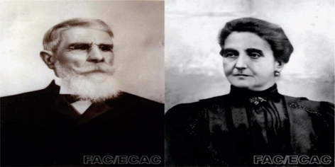
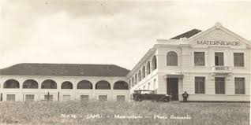
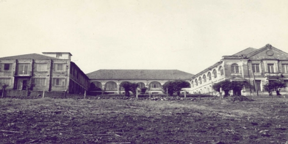
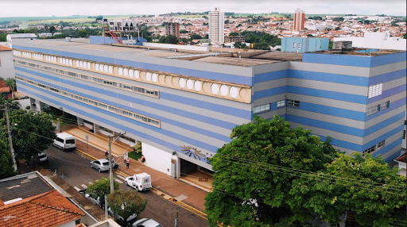
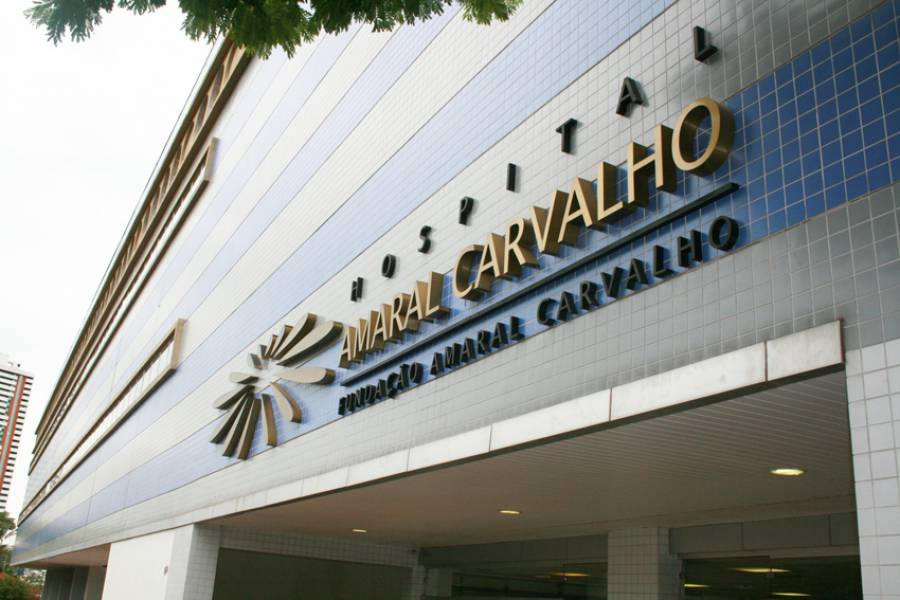
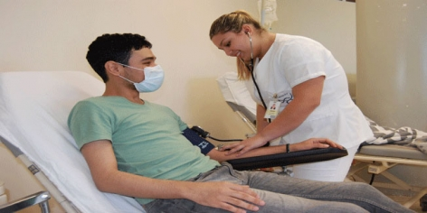

HISTÓRIA DA CIDADE
Fundação
A história de nossa cidade começa no momento em que os bandeirantes navegavam pelo rio Tietê e decidiram
parar para pescar na foz de um ribeirão. Lá fisgaram um grande peixe chamado Jahu. O local, desde então,
ficou conhecido como Barra do Ribeirão do Jahu.
Um pouco mais tarde, em 15 de agosto de 1853, alguns moradores da região decidiram organizar uma comissão
para tratar da fundação do povoado. Depois de vários estudos ficou decidido que seria erguido um povoado
na área de 40 alqueires, doados em partes iguais por Francisco Gomes Botão e tenente Manoel Joaquim Lopes.
Os moradores na sua maioria agricultores, cultivavam o milho, mandioca, algodão, cana-de-açúcar e criavam
bovinos, suínos e ovelhas. O milho e a mandioca eram destinados à alimentação humana e dos animais de
criação e à tropa de serviço (cargueiros). O algodão era destinado para confecção de roupas dos familiares
e escravos. Com a lã das ovelhas eram confeccionados os agasalhos. A cana-de-açúcar era destinada à
fabricação de açúcar, pois havia diversos engenhos, tais como: o de Bento Manoel de Moraes Navarro,
Mariano Lopes Pinheiro, Luiz Pereira Barbosa, e o dele, Capitão José Ribeiro de Camargo, que se destinavam
ao consumo local e venda da sobra para outras praças. Estavam se iniciando os primeiros plantios de café
na região, que mais tarde viriam a ser cultura predominante na região.
Os habitantes já eram em número razoável, o que comportaria a criação de um patrimônio (Curato), onde se
construiria uma Igreja, cemitério e alguns lotes urbanos para residência e comércio. Isto foi no segundo
semestre de 1.851. A idéia da criação do Patrimônio foi bem aceita por todos, criou-se uma comissão para
este fim, composta dos seguintes cidadãos: Tenente Manoel Joaquim Lopes, Francisco Gomes Botão, Bento
Manoel de Moraes Navarro, Lúcio de Arruda Leme e ele, Capitão José Ribeiro de Camargo (os fundadores); as
reuniões realizavam-se na casa de Lúcio de Arruda Leme, onde eram tratados os seguintes assuntos:
- 1°) localização do Patrimônio;
- 2°) denominação do mesmo;
- 3°) doação de área escolhida ao Bispado;
- 4°) escolha da Padroeira ou Padroeiro;
- 5°) derrubada da mata e arruamento.
O lugar
Após a comissão ter visitado "in loco" os diversos terrenos que lhe foram oferecidos para localização do
Patrimônio, optou pela oferta feita em conjunto pelos senhores Tenente Manuel Joaquim Lopes e Francisco
Gomes Botão, de doarem 40 alqueires de terras, sendo 20 alqueires de cada, junto a suas divisas, onde os
mesmos são confrontantes (a linha de divisa dos doadores corre exatamente entre ruas Edgard Ferraz e Major
Prado, da barranca do rio Jahu até o espigão divisor, onde os mesmos dividiram com Lúcio de Arruda Leme),
terreno esse localizado à margem esquerda do rio Jahu, pouco abaixo da barra do ribeirão Figueira, pois o
critério usado pela comissão foi que o terreno escolhido fosse a montante de uma nascente d'água para o
futuro abastecimento do Patrimônio, no caso o córrego da Figueira, e que fosse mais central possível.
A região do Jahu compreendia das barrancas rio Tietê (hoje Barra Bonita) até o espigão divisor das águas
dos ribeirões Marambaia e Sapé (hoje Bariri), das barrancas do rio Jacaré-Pepira até as barrancas do rio
Tietê (em frente a Pederneiras). Assim o local escolhido foi o mais central possível.
O povoamento
O primeiro morador da região do Jahu foi Antonio Dutra, fugitivo da justiça de Araraquara, que para não
ser preso afunda o sertão, vindo a descobrir o rio Jahu, onde apossa-se de enorme gleba de terras à margem
direita do referido rio. Referida gleba tinha início na barra do ribeirão João da Velha com rio Jahu,
subindo pelo ribeirão até as suas cabeceiras, atingindo em seguida o espigão, daí tomava o rumo norte,
abrangendo as cabeceiras dos seguintes ribeirões: Mandaguari, Pouso Alegre e Onça: tomando à esquerda,
segue pelo espigão divisor das águas do Onça e do Prata, até encontrar o rio Jahu e subindo pelo veio
d'água do rio Jahu, até a barra do ribeirão João da Velha, onde teve começo; a sua morada ficava nas
cabeceiras do ribeirão da Onça. Sempre que interpelado sobre suas divisas Antonio Dutra respondia que
começavam em certo lugar, seguiam tais e tais espigões ou águas e terminavam na boca de sua espingarda.
Antonio Dutra teve o fim que mereceu, ao dar uma festa de despedida em sua casa na cidade de Araraquara,
pois ia mudar-se com a família para Jahu. Na madrugada ao cair bêbado, foi assassinado a machadada por sua
mulher e amigos. Seus filhos venderam a posse em duas glebas: a do Pouso Alegre, a Francisco Gomes Botão e
a do João da Velha, a Joaquim de Oliveira Matosinho.
Em 1.837 começaram a chegar outros povoadores, e em 1.842, com a fracassada revolução liberalista, o fluxo
de povoadores aumenta, são os perseguidos políticos que estavam a favor da revolução.
Já em fins de 1.845, a região do Jahu, já estava bem povoada, pois nela residiam muitos agricultores.
HOSPITAL AMARAL CARVALHO
O início

Domingos Pereira de Carvalho e Anna Marcelina Campanhã de Carvalho.
A história do Hospital Amaral Carvalho teve início há 100 anos, com a doação de um terreno pelo casal
Domingos Pereira de Carvalho e Anna Marcelina Campanhã de Carvalho, e o início da construção da
Maternidade do Jahu.
Em 1954, foram ampliadas as atividades da maternidade, que passou a ser também hospital geral com a
denominação Maternidade de Jahu e Hospital Dr. Amaral Carvalho. Na década de 70, tornou-se a primeira
entidade hospitalar do interior do Estado de São Paulo especializada em câncer.
Hoje, um complexo composto pelo Amaral Carvalho, setores administrativos e de apoio, além de unidades de
assistência social e atividades culturais, é mantido pela Fundação Amaral Carvalho, a mais antiga entidade
filantrópica privada de assistência à saúde do Brasil.

Inauguração da Maternidade do Jahu.

Ampliação das atividades da Maternidade que passa a ser também um hospital
geral,
com nova denominação: Maternidade de Jahu e Hospital Dr. Amaral Carvalho.

Hospital Amaral Carvalho atualmente.
O diferencial
Além da humanização, fazem parte da conduta do hospital a responsabilidade social, transparência em suas
ações e dedicação para melhor atender os pacientes com câncer e seus acompanhantes.
A instituição oferece tratamento integral, observando aspectos importantes das condições físicas e
emocionais do paciente, por isso, mantém serviços multidisciplinares como psicologia, terapia ocupacional,
fonoaudiologia, fisioterapia, nutrição, odontologia e assistência social.
Na década de 70, a Fundação Amaral Carvalho intensificou o trabalho de assistência social com o objetivo
de oferecer acompanhamento humanizado aos pacientes ambulatoriais e aumentar as chances de cura e
sobrevida.

Hospital Amaral Carvalho.
A rede de voluntariado da instituição teve início com a criação da Entidade Anna Marcelina de Carvalho, em
Jaú, que presta apoio emocional e material aos pacientes carentes, com doação de cestas de alimentos,
roupas, produtos de higiene e medicamentos, além de dedicação e muito carinho.
Esse trabalho se expandiu a outros municípios e hoje a instituição conta com mais de 100 ligas de combate
ao câncer por todo o País.
As entidades voluntárias recebem ajuda de órgãos municipais, estaduais e da comunidade. Sobrevivem de
doações e renda adquirida em bazares, feiras, entre outros eventos beneficentes.
O trabalho realizado por essas ligas é de extrema importância para a detecção precoce do câncer e seu
correto acompanhamento. Nas cidades onde elas estão presentes, os índices de cura são 12,4% superiores em
relação a outras localidades.
Para evitar fugas do tratamento oncológico e garantir que os pacientes residentes em cidades distantes do
Hospital Amaral Carvalho tenham condições de permanência em Jaú, a Fundação mantém Casas de Apoio aos
pacientes em tratamento ambulatorial. Nessas unidades, os pacientes recebem alimentação e hospedagem
gratuitas.
Um dos principais centros brasileiros de oncologia, o Amaral Carvalho dedica praticamente toda sua
capacidade de atendimento a pacientes do Sistema Único de Saúde (SUS), e também atende pacientes por meio
de convênios.
Quantos pacientes já foram atendidos?

Em 2013, o Hospital Amaral Carvalho alcançou a marca de 2 mil transplantes de
medula óssea.
O Amaral Carvalho recebe pacientes de todo o País, e sempre busca maneiras mais eficientes e humanizadas
para atender seus usuários, alcançando excelente resposta no tratamento. São atendidas mais de 75 mil
pacientes por ano: pessoas de mais de 500 cidades do Estado de São Paulo e de mais de 600 cidades de
outros Estados.
O Hospital Amaral Carvalho é referência nacional em tratamento oncológico e mantém o serviço que mais
realiza transplantes de medula óssea na América Latina: são efetuados, em média, 200 transplantes por ano
na instituição.
Tem mais de 2 mil colaboradores, 300 leitos e realiza anualmente mais de 1 milhão de procedimentos,
incluindo quimioterapia e radioterapia; 11 mil internações; 19 mil cirurgias e 710 mil exames de imagem e
laboratoriais.